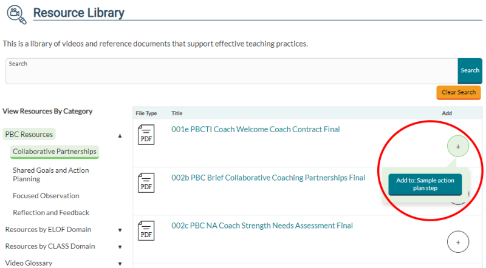

Coaching Companion - FAQ
Will my existing videos still be there?
Yes. All videos which are part of your current Coaching Companion account will be available to use in the new
version.
Will my password change with the new version of Coaching Companion?
Passwords are encrypted for privacy and cannot be migrated. You will log into the new Coaching Companion with your
Early Childhood Learning and Knowledge Center (ECLKC) account user email and password.
Can I use Coaching Companion on my mobile phone or tablet?
Yes. The new version is designed to be viewed on mobile devices
Will the same groups be migrated together?
Yes. Organizations have been migrated along with their sub-groups, and all users have been placed in their
respective organizations and groups.
How do I add users?
All users need to have an ECLKC account. The organization administrator can add users and groups, and place users
into groups. The organization administrators can also assign group administrators who can put users into their
groups.
How do I remove users?
Only the organization and group administrators can add and remove users.
Is the Coaching Companion available in Spanish?
There is not currently a Spanish version of the Coaching Companion
Is there a space allocation per account user? If so, what is the maximum capacity?
There is no limit per account user.
Can any file type be stored, or are there specific file types allowable for
storage? If so, what file types?
Microsoft Word and Excel documents, PDF's, and images can be uploaded and
stored. The most common video file types are permitted. To ensure that the video will perform as
expected, Vimeo online best practices.
Are the files being stored secure and only viewable by our "organization" or can
anyone view those files?
Any resources that are uploaded within a coaching cycle are secure and private and can only be viewed by the
organization administrator and people you selected to be part of that coaching cycle.
How long can resources (e.g., video, images, audio, etc.) be stored?
There are currently no restrictions on how long resources can be stored.
How do I delete resources I uploaded?
Resources can be added and deleted individually from the cycles to which they belong by the user who uploaded
them.
Can I generate reports through Coaching Companion?
Reporting functionality is currently not included, but may be available at a later date.
Will there be resources specific to home visiting (e.g., needs assessments,
videos, etc.)?
Not currently, although many video exemplars may be used as resources by home visitors.
General Navigation
- Your account homepage includes links to all the cycles you are involved with or have created. You can
create new cycles by selecting the Add Cycle tab on the homepage.
- Enter any cycle on your homepage by selecting the name of the cycle.
- The first time you enter a cycle, you will be taken to a page where you must add a goal for the cycle.
- Once a goal has been added and saved, you will be able to add Action Plan Steps and Focused Observations to your cycle.
- Return to the Coaching Companion homepage at any point by selecting PBC Cycles from the main menu.
PBC Cycles
Create a PBC Cycle
- When logged into the Coaching Companion, navigate to PBC Cycles. This is your homepage; the first page you will see when you log in.
- From the PBC Cycles page, select the Add Cycle tab.
- Fill in each field and click Create Cycle
Edit a PBC Cycle
- From the homepage, select the Edit button near the cycle name that you wish to edit and an Edit
tab will appear.
- Make any edits you would like and select Update Cycle to save.
- Only the person who created the cycle will be able to edit the cycle information.
Add an Action Plan Goal
- When logged into the Coaching Companion, navigate to PBC Cycles. Click on the name of the cycle you created.
- If a goal has not yet been created for the cycle, you will be brought to the Action Plan Goal page. If a goal has already been created, you will go straight to Action Plan Steps.
- On the Action Plan Goal page, fill in all fields and select Create
Add Action Plan Steps
- When logged into the Coaching Companion, navigate to PBC Cycles. Click on the name of the cycle you just created.
- If a goal has already been added to the selected cycle, you will be taken to the Action Plan Steps page.
- Fill out all the appropriate form fields and select Create
- If the page does not reload, look at all the fields to make sure none are red, which would indicate that it has not been filled in.
- To edit, from the View Steps tab, select the Edit button next to the name of the step you wish to edit.
- Make any edits you would like.
- Select Update to save.
Add a Focused Observation
- When logged into the Coaching Companion, navigate to PBC Cycles. Click on the name of the cycle you just created.
- If a goal has already been added to the selected cycle, you will be taken to the Action Plan Steps page.
- Click the link that says Go to focused observations located next to the step you wish to add a Focused Observation to.
- Select the Add Observation tab.
- Add a descriptive title.
- Add the observer and the observed participants. Most commonly, you will be a Coach, selecting yourself as the observer, and selecting the Coachee you are working with as the observed participant, although you may want other users to participate.
- Add a Focus, describing the scope of feedback.
- Select the observation date
- Add preparation notes for the feedback.
- Select Create
- If the page does not reload, look at all the fields to make sure none are red, which would indicate that it has not been filled in.
- To edit, select the View Observations tab and choose the Edit button next to the Focused Observation you wish to edit.
- Make any edits you would like and select Update to save.
- Each Focused Observation is directly associated with an Action Plan Step. This association cannot be edited. If the association is incorrect, delete this Focused Observation and created a new one.
Add Comments and Resources to an Action Plan Step or Focused Observation
- To add videos and other resources, from the View Steps tab or the View Observations tab, select Resources & Comments under the name of the step/observation you wish to add resources to.
- To upload a video, select Add New Resource and follow the prompts.
- The resource you upload will appear at the bottom. You may need to refresh the page if it doesn’t automatically appear.
- To add a resource from the Resource Library, select Add Resource from Resource Library.
- Select the circle icon with the plus sign inside, located next to the desired resource. This will open a menu with a button to add the resource to the selected step/observation. Alternatively, you can view the resource first, by clicking the title of the resource and from that page you will also see a button to add the resource to the chosen step/observation.

- The resource will appear at the bottom of the page.
- To add a time-stamped comment on a video, while the video is playing or paused, select "Add Comment to Media" to open a comment box.
- To make comments which are not directly linked to a video, select Add Comment to Step (or Observation if you are on the Focused Observation page).
- You have the options to Reply to comments and to Edit and Delete comments that you have made.